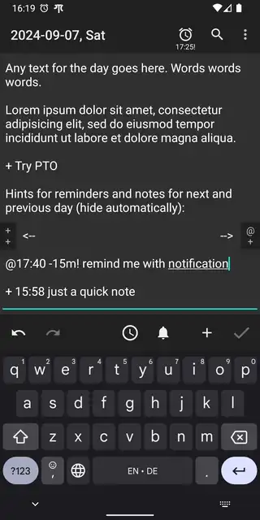
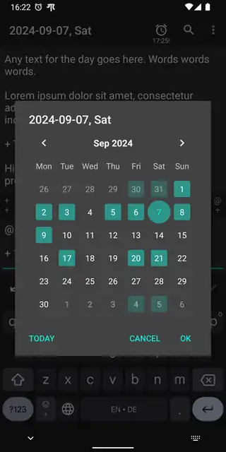

PTO - Plaintext Organizer
قراءة وكتابة
To-do list, notes, appointment book, diary, journal, and… alarm clock? All possible with one plaintext file per day. PTO brings a convenient editor and important additional functions. Features • Powerful text editor with undo/redo, autosave, and more. • Quickly take notes on the lockscreen, without
✓ ترخيص مفتوح (GPL-3.0-only) · آخر تحديث: 2026-03-02
3.6.0الإصدار
1.6 MBالحجم
GPL-3.0-onlyالرخصة
Open in Kanzتحميل APK (1.6 MB)
Download APK
SHA-256: a731b57e7661a29ffd8663ba8ce01c96a998e85ddf0883e368f99d52ff01db9d


امسح الكود لفتح صفحة التطبيق
Scan to open this app page
لو كنز مش متثبت عندك: نزّل متجر كنز.
Not installed? Get the Kanz store.